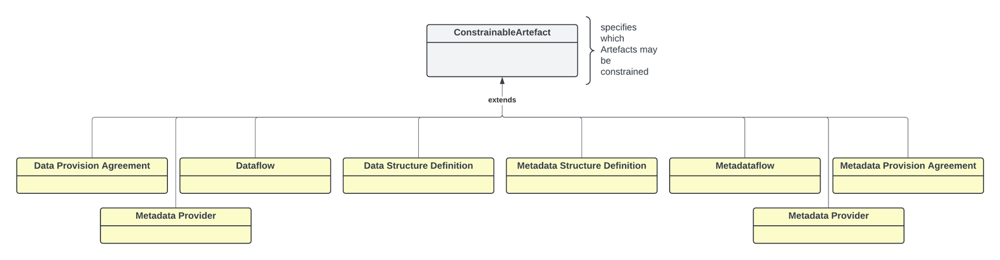
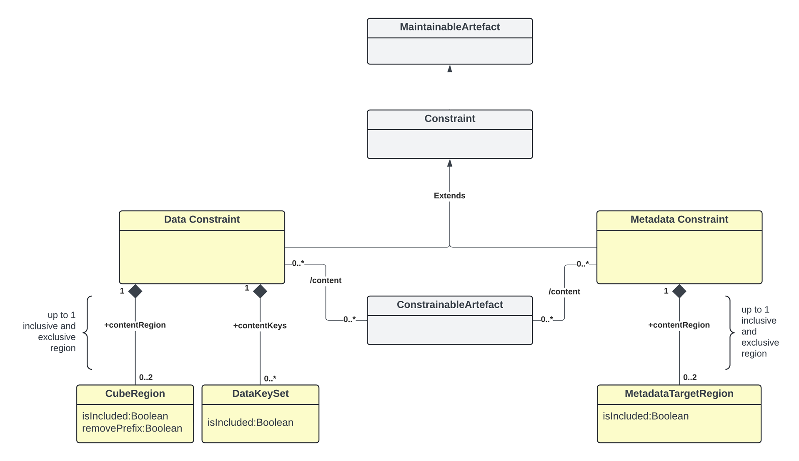
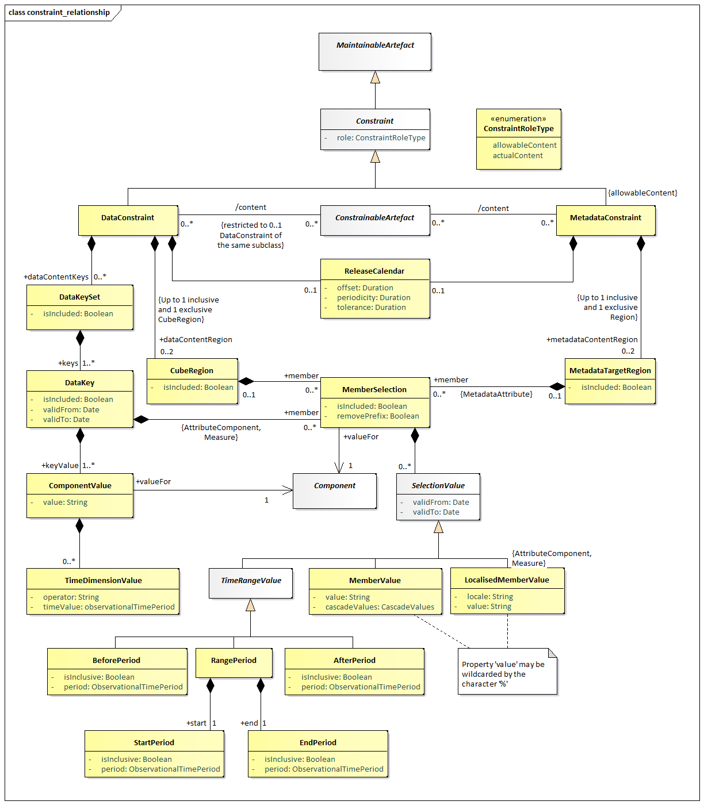

Constraints¶
Scope¶
The scope of this section is to describe the support in the metamodel
for specifying both the access to and the content of a data source. The
information may be stored in a resource such as a registry for use by
applications wishing to locate data and metadata which are available via
the Internet. The Constraint is also used to specify a subset of a
Codelist which may be used as a partial Codelist, relevant in the
context of the artefact to which the Constraint is attached e.g.,
DataStructureDefinition, Dataflow, ProvisionAgreement,
MetadataStructureDefinition, Metadataflow, MetadataProvisionAgreement.
Note that in this metamodel the term data provider refers to both data and metadata providers.
The Dataflow and Metadataflow, themselves may be specified as containing
only a subset of all the possible keys that could be derived from a
DataStructureDefinition or MetadataStructureDefinition. Respectively,
further subsets may be defined within a ProvisionAgreement and
MetadataProvisionAgreement.
These specifications are called Constraint in this model.
Inheritance¶
Class Diagram of Constrainable Artefacts - Inheritance¶

Figure 41. Inheritance class diagram of constrainable and provisioning artefacts
Explanation of the Diagram¶
Narrative¶
Any artefact that inherits from the ConstrainableArtefact interface
can have constraints defined. The artefacts that can have constraint
metadata attached are:
DataflowProvisionAgreementDataProviderDataStructureDefinitionMetadataflowMetaDataProviderMetadataProvisionAgreementMetadataStructureDefinition
Note that, because the Constraint can specify a subset of the
component values implied by a specific Structure (such as a specific
DataStructureDefinition or specific MetadataStructureDefinition), the
ConstrainableArtefacts must be associated with a specific Structure.
Therefore, whilst the Constraint itself may not be linked directly to
a DataStructureDefinition or MetadataStructureDefinition, the artefact
that it is constraining will be linked to a DataStructureDefinition or
MetadataStructureDefinition. A DataProvider and MetadataProvider indirectly
reference DSDs and MSDs through their associated Data and Metadata Provision
Agreements as such these Constraints are restricted to Cube Regions and are
applicable only to the DSDs / MSDs which contain the Components being restricted.
Constraints¶
Relationship Class Diagram – high level view¶

Figure 42. Relationship class diagram showing constraint metadata
Explanation of the Diagram¶
Narrative¶
The constraint mechanism allows specific constraints to be attached to a
ConstrainableArtefact. These
constraints specify a subset of the total set of values or keys that may
be present in any of the ConstrainableArtefacts.
For instance, a DataStructureDefinition specifies, for each Dimension,
the list of allowable code values. However, a specific Dataflow that
uses the DataStructureDefinition may contain only a subset of the
possible range of keys that is theoretically possible from the
DataStructureDefinition definition (the total range of possibilities is
sometimes called the Cartesian product of the dimension values). In
addition to this, a DataProvider that is capable of supplying data
according to the Dataflow has a ProvisionAgreement, and the DataProvider
may also wish to supply constraint information which may further
constrain the range of possibilities in order to describe the data that
the provider can supply. It may also be useful to describe the content
of a data source in terms of the KeySets or CubeRegions contained within
it.
A ConstrainableArtefact can have two types of Constraints:
DataConstraint– is used as a mechanism to specify the set of keys (DataKeySet), or set of component values (CubeRegion) that can be reported against the targetConstrainableArtefact. Multiple suchDataConstraintsmay be present for aConstrainableArtefact.MetadataConstraint– is used as a mechanism to specify a set of component values (MetadataTargetRegion) that can be reported against the targetConstrainableArtefact. Multiple suchMetadataConstraintsmay be present for aConstrainableArtefact.
Note also that another possible type of a Constraint is available; that is a
AvailableDataConstraint, this is used to report the data that exists in a data
source. An AvailableDataConstraint is not a Maintainable Artefact as it is
generated dynamically based on the query. An AvailableDataConstraint contains
only 1 CubeRegion which is used to specify the valid values per Dimension of
the DSD that it is attached to.
Relationship Class Diagram – Detail¶

Figure 43. Constraints – Key Set, Cube Region and Metadata Target Region
Explanation of the Diagram¶
A Constraint is a MaintainableArtefact.
A DataConstraint has a choice of two ways of specifying value subsets:
- As a set of keys that can be present in the
DataSet(DataKeySet). EachDataKeyspecifies a number ofComponentValueseach of which reference aComponent(e.g., Dimension,DataAttribute). EachComponentValueis a value that may be present for aComponentof a structure when contained in aDataSet. In addition, eachDataKeySetmay also includeMemberSelectionsforAttributeComponentsor Measures. - As a
CubeRegionwhoseMemberSelectionsSelectionValuesdefine a subset of allowed/disallowed values for aComponentwhen contained in aDataSet/MetadataSet. ADataConstraintis restricted to a maximum of 2CubeRegions, one to define included (allowable) content, and the other to define disallowed content (isIncluded=false).
The difference between (1) and (2) above is that :
- Defines a combination of
Dimensionvalues, which are assessed in combination to reference one or moreSeriesin aDataset. This combination of values can be used to explicitly include or exclude the Series from being reported (via theisIncludedproperty). In addition, once a set of Series are targeted by aDataKeyrestrictions can be applied toAttributeandMeasurevalues by defining subsets of values that are either allowed or disallowed. TheDataKeySettargets its rules to specific Series. - Defines a subset of values that are allowed for a
Component. EachCubeRegionMemberSelectiondefines a single Component to define a set of allowed or disallowed values, theMemberSelectionsare processed independently of each other. The Cube Region supplies global rules, not series specific rules.
A MetadataConstraint has only one way of specifying value subsets:
- As a set of
MetadataTargetRegionseach of which defines a “slice” of the total structure (MemberSelection) in terms of one or moreMemberValuesthat may be present for aComponentof a structure when contained in aMetadataSet.
In both CubeRegion and MetadataTargetRegion, the value in
ComponentValue.value and MemberValue.value must be consistent with the
Representation declared for the Component in the
DataStructureDefinition (Dimension or DataAttribute) or
MetadataStructureDefinition (MetadataAttribute). Note that in all cases
the “operator” on the value is deemed to be “equals”, unless the
wildcard character is used '%'. In the latter case the “operation” is a
partial matching, where the percentage character ('%') may match zero or
more characters. Furthermore, it is possible in a MemberValue to specify
that child values (e.g., child codes) are included in the Constraint by
means of the cascadeValues attribute. The latter may take the following
values:
"true": all children are included,"false"(default), or"excludeRoot", where all children are included, and the root Code is excluded (i.e. the referenced Code).
It is possible to define for the DataKeySet, DataKey, CubeRegion,
MetadataTargetRegion and MemberSelection whether the set is included
(isIncluded = "true", default) or excluded (isIncluded = "false") from
the Constraint definition. This attribute is useful if, for example,
only a small sub-set of the possible values are not included in the set,
then this smaller sub-set can be defined and excluded from the
constraint. Note that if the child construct is “included” and the
parent construct is “excluded” then the child construct is included in
the list of constructs that are “excluded”.
In any MemberSelection that the corresponding Component was using
Codelist with extensions, it is possible to remove the prefix that has
been used, in order to refer to the original Codes. This is achieved via
property removePrefix, which defaults to “false”.
In DataKeys and MemberValues it is possible, via the validFrom and
validTo properties, to set a validity period for which the selected key
or value is constrained.
Definitions¶
| Class | Feature | Description |
|---|---|---|
ConstrainableArtefact |
Abstract Class Sub classes are: Dataflow DataProvider DataStructureDefinition Metadataflow MetadataProvisionAgreement MetadataSet MetadataStructureDefinition ProvisionAgreement QueryDatasource SimpleDatasource |
An artefact that can have Constraints specified. |
content |
Associates the metadata that constrains the content to be found in a data or metadata source linked to the Constrainable Artefact. | |
Constraint |
Inherits from MaintainableArtefact Abstract class Sub classes are: DataConstraint MetadataConstraint |
Specifies a subset of the definition of the allowable or actual content of a data or metadata source that can be derived from the Structure that defines code lists and other valid content. |
+dataContentKeys |
Association to a subset of Data Key Sets (i.e., value combinations) that can be derived from the definition of the structure to which the Constrainable Artefact is linked. | |
+dataContentRegion |
Association to a subset of component values that can be derived from the Data Structure Definition to which the Constrainable Artefact is linked. | |
+metadataContentRegion |
Association to a subset of component values that can be derived from the Metadata Structure Definition to which the Constrainable Artefact is linked. | |
| role | Association to the role that the Constraint plays | |
DataConstraint |
Inherits from Constraint |
Defines a Constraint in terms of the content that can be found in data sources linked to the Constrainable Artefact to which this constraint is associated. |
ConstraintRoleType |
Specifies the way the type of content of a Constraint in terms of its purpose. | |
allowableContent |
The Constraint contains a specification of the valid subset of the Component values or keys. | |
actualContent |
The Constraint contains a specification of the actual content of a data or metadata source in terms of the Component values or keys in the source. | |
MetadataConstraint |
Inherits from Constraint |
Defines a Constraint in terms of the content that can be found in metadata sources linked to the Constrainable Artefact to which this constraint is associated. |
DataKeySet |
A set of data keys. | |
isIncluded |
Indicates whether the Data Key Set is included in the constraint definition or excluded from the constraint definition. | |
+keys |
Association to the Data Keys in the set. | |
+member |
Association to the selection of a value subset for Attributes and Measures. | |
DataKey |
The values of a key in a data set. | |
isIncluded |
Indicates whether the Data Key is included in the constraint definition or excluded from the constraint definition. | |
+keyValue |
Associates the Component Values that comprise the key. | |
validFrom |
Date from which the Data Key is valid. | |
validTo |
Date from which the Data Key is superseded. | |
ComponentValue |
The identification and value of a Component of the key (e.g., Dimension) | |
value |
The value of Component | |
+valueFor |
Association to the Component (e.g., Dimension) in the Structure to which the Constrainable Artefact is linked. | |
TimeDimensionValue |
The value of the Time Dimension component. | |
timeValue |
The value of the time period. | |
operator |
Indicates whether the specified value represents and exact time or time period, or whether the value should be handled as a range. A value of greaterThan or greaterThanOrEqual indicates that the value is the beginning of a range (exclusive or inclusive, respectively). A value of lessThan or lessThanOrEqual indicates that the value is the end or a range (exclusive or inclusive, respectively). In the absence of the opposite bound being specified for the range, this bound is to be treated as infinite (e.g., any time period after the beginning of the provided time period for greaterThanOrEqual) |
|
CubeRegion |
A set of Components and their values that defines a subset or “slice” of the total range of possible content of a data structure to which the Constrainable Artefact is linked. | |
isIncluded |
Indicates whether the Cube Region is included in the constraint definition or excluded from the constraint definition. | |
+member |
Associates the set of Components that define the subset of values. | |
MetadataTargetRegion |
A set of Components and their values that defines a subset or “slice” of the total range of possible content of a metadata structure to which the Constrainable Artefact is linked. | |
isIncluded |
Indicates whether the Metadata Target Region is included in the constraint definition or excluded from the constraint definition. | |
+member |
Associates the set of Components that define the subset of values. | |
MemberSelection |
A set of permissible values for one component of the axis. | |
isIncluded |
Indicates whether the Member Selection is included in the constraint definition or excluded from the constraint definition. | |
removePrefix |
Indicates whether the Codes should keep or not the prefix, as defined in the extension of Codelist. | |
+valuesFor |
Association to the Component in the Structure to which the Constrainable Artefact is linked, which defines the valid Representation for the Member Values. | |
SelectionValue |
Abstract class. Sub classes are: MemberValue TimeRangeValue LocalisedMemberValue |
A collection of values for the Member Selections that, combined with other Member Selections, comprise the value content of the Cube Region. |
validFrom |
Date from which the Selection Value is valid. | |
validTo |
Date from which the Selection Value is superseded. | |
MemberValue |
Inherits from SelectionValue |
A single value of the set of values for the Member Selection. |
value |
A value of the member. | |
cascadeValues |
Indicates that the child nodes of the member are included in the Member Selection (e.g., child codes) | |
LocalisedMemberValue |
Inherits from SelectionValue |
A single localised value of the set of values for a Member Selection. |
value |
A value of the member. | |
locale |
The locale that the values must adhere to in the dataset. | |
TimeRangeValue |
Inherits from SelectionValue Abstract Class Concrete Classes: BeforePeriod AfterPeriod RangePeriod |
A time value or values that specifies the date or dates for which the constrained selection is valid. |
BeforePeriod |
Inherits from TimeRangeValue |
The period before which the constrained selection is valid. |
isInclusive |
Indication of whether the date is inclusive in the period. | |
period |
The time period which acts as the latest possible reported period | |
AfterPeriod |
Inherits from TimeRangeValue |
The period after which the constrained selection is valid. |
isInclusive |
Indication of whether the date is inclusive in the period. | |
period |
The time period which acts as the earliest possible reported period | |
RangePeriod |
The start and end periods in a date range. | |
+start |
Association to the Start Period. | |
+end |
Association to the End Period. | |
StartPeriod |
Inherits from TimeRangeValue |
The period from which the constrained selection is valid. |
isInclusive |
Indication of whether the date is inclusive in the period. | |
period |
The time period which acts as the start of the range | |
EndPeriod |
Inherits from TimeRangeValue |
The period to which the constrained selection is valid. |
isInclusive |
Indication of whether the date is inclusive in the period. | |
period |
The time period which acts as the end of the range |